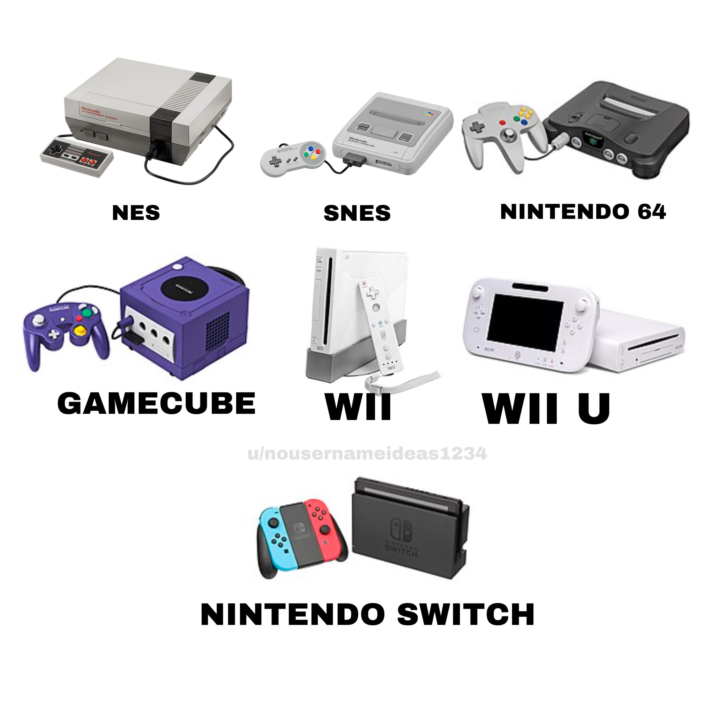
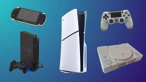

Started out as a Playin card business in the 1800s. Its focus shifted to toy and electrons in the 1900s. Created the Game watch in 1980 and would release the NES in 1985. Nintendo has become the most popular gaming company and has had several successful games such as Super Mario, Zelda,and Metroid along with several consoles.
This is a table of the highest selling video games of all time
| Game | Studio/Creator | Sales | Release Date |
|---|---|---|---|
| Tetris | Alexey Patjinov | 520 million | Jue 6,1984 |
| Minecraft | Mojang | 300 million | May 17,2009 |
| Grand Theft Auto 5 | Rockstar Games | 210 million | September 17,2013 |
| Wii Sports | Nintendo | 82.9 million | November 19,2006 |
| Mario Kart 8+ Deluxe | Nintendo | 75.81 million | May 29,2014 |
| PlayerUnknown's Battlegrounds | Bluehole | 75 million | December 20,2017 |
| Red Dead Redemption 2 | Rockstar Games | million | October 26,2018 |
| The Elder Scrolls V: Skyrim | Bethesda Game Studios | 60 million | November 11,2011 |
| Terraria | Re-Logic | 56.7 million | May 16, 2011 |
| The Witcher 3: Wild Hunt | CD Projekt Red | 50+ million | May 19, 2015 |